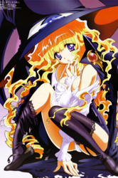
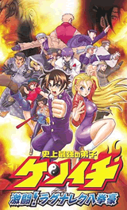
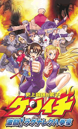

EL MEJOR SITIO DE TUS ANIMES PREFERIDOS

Anime en Emision
Bleach 335
Bleach 336
Bleach 337
Naruto Shippuden 225
Naruto Shippuden 226
Naruto Shippuden 227
One Piece 511
One Piece 512
One Piece 513
Fairy Tail 93
Fairy Tail 93
Fairy Tail 93
Anime Aleatorio

Yami to Boushi to Hon no Tabibito
Hadsuki Azuma es una adolescente muy popular entre las chicas de su colegio, aunque ella sólo quiere a su hermana adoptiva Hatsumi, quien es muda. La noche que Hatsumi cumplia 16 años, Hadsuki entro a su cuarto, pero al intentar besar a su hermana quien estaba dormida, una luz verde invade la habitación y Hatsumi desaparece despues de decir el nombre de su hermana. Minutos despues un ave (ken-chan) entro buscando a Eve. Hadsuki obligó al ave a llevarla con él, llegando a una enorme
Yami to Boushi to Hon no Tabibito
Hadsuki Azuma es una adolescente muy popular entre las chicas de su colegio, aunque ella sólo quiere a su hermana adoptiva Hatsumi, quien es muda. La noche que Hatsumi cumplia 16 años, Hadsuki entro a su cuarto, pero al intentar besar a su hermana quien estaba dormida, una luz verde invade la habitación y Hatsumi desaparece despues de decir el nombre de su hermana. Minutos despues un ave (ken-chan) entro buscando a Eve. Hadsuki obligó al ave a llevarla con él, llegando a una enorme

Yami to Boushi to Hon no Tabibito
Hadsuki Azuma es una adolescente muy popular entre las chicas de su colegio, aunque ella sólo quiere a su hermana adoptiva Hatsumi, quien es muda. La noche que Hatsumi cumplia 16 años, Hadsuki entro a su cuarto, pero al intentar besar a su hermana quien estaba dormida, una luz verde invade la habitación y Hatsumi desaparece despues de decir el nombre de su hermana. Minutos despues un ave (ken-chan) entro buscando a Eve. Hadsuki obligó al ave a llevarla con él, llegando a una enorme

Yami to Boushi to Hon no Tabibito
Hadsuki Azuma es una adolescente muy popular entre las chicas de su colegio, aunque ella sólo quiere a su hermana adoptiva Hatsumi, quien es muda. La noche que Hatsumi cumplia 16 años, Hadsuki entro a su cuarto, pero al intentar besar a su hermana quien estaba dormida, una luz verde invade la habitación y Hatsumi desaparece despues de decir el nombre de su hermana. Minutos despues un ave (ken-chan) entro buscando a Eve. Hadsuki obligó al ave a llevarla con él, llegando a una enorme
Yami to Boushi to Hon no Tabibito
Hadsuki Azuma es una adolescente muy popular entre las chicas de su colegio, aunque ella sólo quiere a su hermana adoptiva Hatsumi, quien es muda. La noche que Hatsumi cumplia 16 años, Hadsuki entro a su cuarto, pero al intentar besar a su hermana quien estaba dormida, una luz verde invade la habitación y Hatsumi desaparece despues de decir el nombre de su hermana. Minutos despues un ave (ken-chan) entro buscando a Eve. Hadsuki obligó al ave a llevarla con él, llegando a una enorme
Los animes mas populares de ver anime


 



Ultimos Capitulos
- Dantalian no shoka 7
- R-15 8
- Itsuka Tenma no Kuro-Usagi 8
- The idolm@ster 8
- Ro-Kyu-Bul 8
- Beelzebub 31
- Inazuma eleven GO 17
- Pocket Monsters Best Wishes! 45
- Ao no Exorcist 20
- Nichijou 22
- Blade 9
- Hanasaku Iroha 22
- Sacred Seven 9
- Digimon Xros Wars 48
- Sket Dance 21
Ultimos Animes Agregados
- Thundercats (2011)
- Dantalian no Shoka
- Morita-san wa Mukuchi
- Double J
- Appleseed XIII
- Nekogami Yaoyorozu
- Manyu Hiken-cho
- Ikoku Meiro no Croisee
- R-15
- Nichijou 22
- Itsuka Tenma no kuro-Usagi